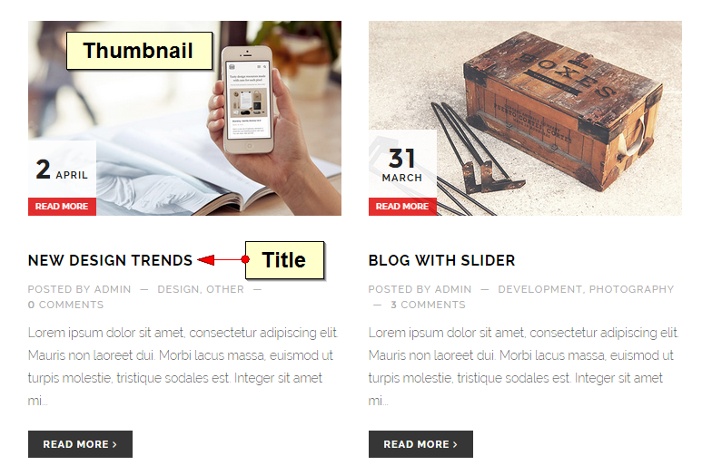
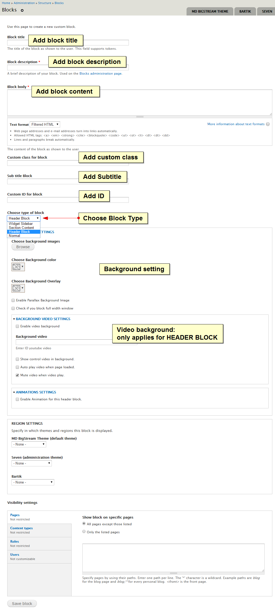
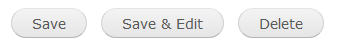

Bigstream - Onepage Multipurpose Drupal Theme
Version 1.0Thank you very much for purchasing our theme. In this user guide, you will find all required information to get your site up and running: starting from theme installation and setup, to usage of different post types, page templates and shortcodes. If all else fails or you have any questions about our theme that isn't covered in this documentation, please do not hesitate to submit a support request via our support forum.
We hope you will enjoy working with our themes.
Yours sincerely,
Megadrupal Themes.
Before Getting started
Please note that this theme is not harder to use than any other premium theme with advanced functions. Moreover, we believe that it’s even much easier! And there’s a good reason for that: amount of time that we invested in designing its interfaces, page templates and theme options is simply immense…
Nevertheless, please note that this User Guide does NOT cover basic Drupal usage. Therefore if you are not a confident Drupal user, please get accustomed with it BEFORE proceeding to this manual and theme!
First of all please google “Drupal basics” – plethora of articles and educational videos are available!
Here are some links that will help you to become more confident with Drupal:
- Drupal concepts: https://drupal.org/documentation/concepts
- Brings you step-by-step instructions to complete specific Drupal tasks.: http://www.digett.com/drupal-video-tutorials
- A group for apprentice/journeyman developers who want to increase proficiency: https://groups.drupal.org/drupal-dojo
- Free videos and articles: http://codekarate.com/
Getting started
You can insert your development link (start with http://) below to make some link in this document clickable and go straight to your site
Requirement
Let's go over the minimum requirements that you will need in order to have a fully functioning site running our theme.
- Drupal 7
- The theme files that you downloaded from themeforest.net
- Web server: Apache, Nginx, or Microsoft IIS
- PHP 5.2.5 or higher (5.3 recommended)
- MySQL 5.0.15 or higher with PDO, PostgreSQL 8.3 or higher with PDO, SQLite 3.3.7 or higher
If you already have a working install of Drupal feel free to skip ahead to theme installation.
Download package contents
Once you have downloaded and unzipped the Bigstream package you will be faced with a list of files and folders. An explanation of these is as follows. Any item not mentioned here should be ignored for the moment.
| bigstream_install_profile.zip | This is a zip archive of the install profile. This is used for auto install using profile | |
| Manual install | This folder includes assets used for manual install. This contains file Libraries, md_bigstream_7.x-1.0.zip and module.zip | |
| Documentation | This is the help documentation. To view simply open index.html found inside this folder |
Install using demo profile
Once you have downloaded the Bigstream package from Themeforest.net, there are 2 ways of installing this theme. First way is easy way: using demo install profile. This way is like install standard Drupal. This video below show you how to do this.
You've done, now go to theme settings to custom your website and enjoy it.
Manual install
For manual install, you need install theme & require modules.
Install theme
You can install by using Drupal theme uploader or using FTP
-
Drupal theme uploader
- Log into your website
- From admin toolbar, click Appearance
- Click Install new theme
- Browse to the theme's zip file (it is located in the folder you've downloaded from ThemeForest) and choose that file.
- Click
Installand wait while theme is uploaded to your server - After successfully message, you can click
Enable and set defaultMD Bigstream - After that, you need to click Theme settings and
Save configurationfor define some basic settings.
-
FTP
- Browse to the theme's zip file (it is located in the folder you've downloaded from ThemeForest) and extract that file, you will get folder named "md_bigstream"
- Open your FTP program and FTP into your site and navigate to the sites/all/themes/ directory
- Upload md_bigstream to this directory
- Back to your drupal admin toolbar, click Appearance
- Find MD Bigstream and click
Enable and set default - After that, you need to click Theme settings and
Save configurationfor define some basic settings.
Install modules
After installing MD Bigstream theme, you can extract modules.zip (find in zip package) to sites/all/modules/ directory. Then go to Modules to install bigstream features module.
List modules used in Bigstream:
- admin_menu
- context
- ctools
- date
- devel
- devel_themer
- entity
- features
- file_entity
- flippy
- fontello
- icon
- jquery_update
- media
- media_soundcloud
- media_vimeo
- media_youtube
- quicktabs
- simplehtmldom
- simplenews
- token
- views
- webform
- MD Block
- MD Fullscreen Slider
- MD Slider
Insert content
After install and configure, nothing show in front page (and other pages). Please add some content and see your site working.
Theme installation errors
Do not upload the Themeforest download package directly to your Drupal site, because this will lead to errors. Make sure to Unzip this package and inside you will find the theme zip archive: md_bigstream-7.x-1.0.zip. This is what you will need to upload to your Drupal site
Theme update
When theme has a bug fixes or enhancements, you will be notified to upgrade..
Installing updates is just involves replacing the old theme files with the new ones. It's always a good idea to backup everything before you upgrade, especially if you have made any changes to MD bigstream's files, as the upgrade will overwrite all files. All custom in theme settings will all remain intact.
Backing Up
- It is always a good idea to back up your theme before making any changes
- Open your FTP program and FTP into your site and navigate to the
sites/all/themes/directory. - Download the md_bigstream folder and save it as a backup
Upgrading
- Download the new version of the theme from ThemeForest
- Browse to the theme's zip file (it is located in the folder you've downloaded from ThemeForest) and extract that file, you will get folder named "md_bigstream"
- Put your site to Maintenance mode (Go to Configuration then Maintenance mode. Make sure the "Put site into maintenance mode" box is checked and click "Save configuration")
- Switch to your FTP program, FTP into your site and navigate to the
sites/all/theme/directory. - Transfer the new md_bigstream folder into the sites/all/theme/ directory on your server, overwrite the existing one.
- Clear site cache (Go to Configuration then Performance and click "Clear all caches" button)
Note: If you are running a local server, just copy and override the files.
Site Menu
The Bigstream theme contains 1 menu location, Main Menu . In this section, we will outline the steps involved in creating the menu for this theme.
Creating menu
- Go to Structure/Menu in the toolbar and click
List linknear Main menu. - At first you will probably need to add a menu, click
Add link& give it a name, link, where to scroll and save it. - Now you can drag the newly inserted menu item to their correct sequence.
- After you have added and edited the menu items click
Save Configurationin the bottom of this area.
Customising Menu
See in the theme setting
Adding Content
The Bigstream theme contains 9 different content types:
| Blog | Create new blogs which are displayed in reverse chronological order | |
| Client | Introduce your valued clients and customers or cooperators here | |
| Portfolio | Showcase your featured work here | |
| Services | Showcase your amazing services here | |
| Simplenews Newsletter | A newsletter issue to be sent to subscribed email addresses | |
| Skill | Shows up your excellent and outstanding skills | |
| Team | Show your team member's information | |
| Testimonial | Show your clients' feedback and compliment here | |
| Webform | Create a new form or questionnaire accessible to users. Submission results and statistics are recorded and accessible to privileged users |
To add content, just click Content from admin toolbar and Click Add Content or you can click Add Content from shortcut toolbar.
Adding Blog
Blog is not different with other blog type, just click Add content > Blog and add your article.

Adding Client
All you need is just uploading the logo and insert link. The title will not be displayed
Adding Portfolio

Picture pop up:
Adding Services
Adding Simplenews Newsletter
Simplenews publishes and sends newsletters to lists of subscribers. Both anonymous and authenticated users can opt-in to different mailing lists.
Adding Skill
Adding Team
Adding Testimonial
Adding Webform
Go to Add Content > Webform to create a new webform
After click Save, you can add elements for your webform
And here is the final view of webform
Block Region
If you used demo install profile, then this setup will be already done. In which case you may only need to modify things. However we still recommend that you read this section carefully because it contains important information which will be useful during modification of the block configuration.
Assigning block
Blocks are placed in regions via the Block Admin page Dashboard > Structure > Blocks. Here you can
- Enable, throttle, place, and configure blocks
- Add a block
Creating new block region
You can follow this article to create new block region. This is short introduction:
- Open md_bigstream/md_bigstream.info file (with a text editor)
- Find
regions[footer] = Footer - Insert code after:
regions[region_name] = Region human readable name - Save md_bigstream.info file and go to Configuration > Performance to clear site cache
Placing your block region into the theme
- Open md_bigstream/template/page.tpl.php file (with a text editor)
- Paste this code to wherever you want to display block region:
<?php if ($page['region_name']): ?> <div class="region-class"> <?php print render($page['region_name']); ?> </div> <?php endif; ?>
Block Settings
In MD Bigstream, we use MD Block to create blocks for the site. You can freely create as many blocks as you want with a variation of customising.
Create New Block
You also go to Structure > Blocks and click on Add Block. Here you can start to create your block's settings and ending up by hit Save block button.
Here is the general interface of Block Setting page:

Block Type: We offer you 4 types of block: Widget Sidebar, Section Content, Header Block and Normal
- Widget Sidebar: Create blocks, which will display in the sidebar region
- Section Content: Create blocks which display in each page
- Header Block: Besides MD Fullscreen Slider, you can absolutely create your site Header with MD Block.
- Normal: This renders default blocks
Edit Block
To edit and configure the available blocks in MD Bigstream, you just easily click on the gear icon and then Configure Block, you will be led to the configure page, where you can make changes and customise the block as you want.
Some Special Blocks
Google Map Block
Besides adding Marker Title, you also need add Longitude and Latitude. Easily, you can get here

Bigstream Footer Block
Here you can also add text footer (copyright text) and social icons
Theme Settings
In this section we will explain the custom settings that come with the bigstream theme, where to find them and what you would use them for.
bigstream's custom theme settings can be found at Appearance > Settings (near MD Bigstream theme).
General settings
General settings usually with a global or site wide effect. This tab is open by default when this page is loaded.
Site Settings
Enable or disable some elements like logo, slogan, menu ...
Logo, Favicon & Webclip
Customise or change webclip, logo and favicon icons (A webclip is the icon that appears on a user's iPhone, iPad or Android device if they save your website to their home screen.)
Custom Font
Add your favourite Google text font to the font library here
Design
Skin
We offer you 15 different beautiful skins for your site:
Preloader
You can enable preloader here:
Menu
Customise your site's menu here:
Menu Type:
- Horizontal: The menu displays horizontally
- Vertical: The menu displays vertically: on the left or on the right
Menu Skin:
- Dark
- Light
Menu Position:
- Scroll: The menu will disappear when you scroll down
- Fixed: The menu always displays when you scroll
Menu Wrapper:
- Full: The menu will display in full-width
- Container: There will be left and right margin
Contact
Adding your contact information here
Text/Typography
Custom text and typography in all pages.
Custom code
Add custom CSS/JS code into your website
Insert custom code to Header, Footer region or Custom CSS Code here if you want to add additional and customize your site.
Backup & restore
Make and upload theme's backup file
We support you to backup all your file by clicking Backup All Settings and also restore it when you need
MD Fullscreen slider
Fullscreen Slider is the best way for maximizing visibility of your works and showcasing it in a creative way. It allows you to insert images, add texts and embed video or link into the same slider.
Managing sliders
After installation, you can go to Structure » MD Fullscreen Slider to see Fullscreen Slider overview page.
Here you can manage all your sliders, edit, clone or delete a slider.
Creating a new slider
To create a new slider, click Create new FullScreen Slider to start creating new slider.
Edit slider
One slider is split in two parts: Config and Main slide items. You can click on Configure to change slider config and click Edit to change slider items.
Cloning an existing slider
Cloning an existing slider is easy, just click Clone link from slider overview page.
Delete a slider
To delete a slider, you need to click Configure and scroll to bottom. Here you will find delete button, just click to delete your slider.
Basic config
At the first screen, you will see several parameters that you can change to customise your slider.
- Slider title This title is just for the administrator to identify the slideshow.
- Description If title field is not long enough, you can type description of your slider here
- Slide width Insert your slider width
- Slide height Insert your slider height
- Automatically start Slide will automatically play when the site is opened.
- Pause on hoverStop at the current slide, not move to the next one when you move the mouse cursor into the slide
- Enable touch swipe for touch device Swipe to move to the next slide image on touch device
- Keyboard navigation Using arrow keys for navigating slides
- Loop Check if you want slider start over when reaching last item
- Show loading bar Enable/disable your slider loading bar
- Slide's transition time Configure speed of the transition (in milliseconds)
- Show next/prev button Show the button for moving to next or previous slide
- Next/Prev button on hover (appear when
Show next/prev buttonis checked) Next/prev button is showed when user move mouse enter into slider - Navigation button Show the buttons for slide navigation
- Navigation position (appear when
Navigation buttonis checked) set navigation button position - Navigation buttons on hover (appear when
Navigation buttonis checked) navigation button is showed when user move mouse enter into slider - Thumbnail navigation Show the thumbnails for slide navigation
- Thumbnail width (appear when
Thumbnail navigationis checked) change thumbnail width - Thumbnail height (appear when
Thumbnail navigationis checked) change thumbnail height - Thumbnail position (appear when
Thumbnail navigationis checked) set thumbnail position - Background Color Set background color for your slider. This appear on some specific slide transition
- Custom CSS Insert your custom CSS for fullscreen slider
- Events Callback Insert custom JS callback
- Google font Add google font to use on your slider.
- Typekit Add typekit font to use on your slider.
- Do not include font If you've already add google or typekit fonts to your theme, check
Do not include font. - Generate css file generating css file for faster. Please do this after finish editing slider
Click Create button, you will go to edit step.
Edit & Custom your slide items
After click Create button, you will go to edit page
This page split in 3 parts: slide items panel, Tools panel and Timeline panel
Slide items panel
Each tab in the slide item panel is representative of each slide item. You can Add new {1}, change slide image and transitions {4}, clone {5}, re-order {2} or remove {3} slide item. Just click and drag your mouse.
Tools panel
The Tools panel helps you add new objects, edit object align, background, animation...
When you select an object, the Tools panel will show you options. Some tool options are only displayed if you choose a particular type of selected object.
Timeline panel
The Timeline panel organizes and controls a slide's content over time in layers. Layers are stacked on top of one another, each one contains a specificed text, image or video.
Slides can have different delay time options, you can drag delay line {6} to change this value.
Controls in the layers section of the Timeline make it possible to hide, show {1}, clone {3}, delete {4} or re-order {8} layers. You can drag to adjust layer start {9}, stop {10} time or position {11}.
Working with objects
Add new object
You can add new object to slide item by clicking to text/image/video icon at tools panel. In term of image object, you can upload image from your computer or choose existing image from server. Video object supports Youtube & Vimeo, all you need to do is provide Youtube or Vimeo video link.
Selecting an object
Before you can do anything with any object, you must select it. You can select object with mouse click or using layer in timeline panel. You can also select multi objects by holding ctrl button and click on objects.
Selection information in the tools panel
Whenever you select an object, the tools panel will show information & properties of the object. You can customize objects by changing value from tools panel.
Moving an object
This is a very simple step, and you can move object to exactly place that you want:
- Select an object
- Press & hold left mouse button and move your pointer.
- Or you can change in tools panel: enter the X and Y coordinates for the location of the top left corner of the selection.
Aligning objects
Align & Space box will appear when you select more than one object (hold shift and left click on object). The Align commands in the tools panel give you a wide range of arrangement options, allowing you to do any of the following:
- Align selected objects along a horizontal or vertical axis.
- Align selected objects vertically along their right edge, center, or left edge, or horizontally along their top edge, centre, or bottom edge.
Changing objects space
The Space commands in the tools panel help you control space between objects. You can change horizontal or vertical space.
- Select 2 or more objects
- Enter number into space value (leave blank if you want space evenly)
- Press space button
Style an object
You can style an object depending on object type, just select and change value in tool panel
Enable slider
After creating slider, your slider will be available as a block, you need to assign it to some region. From admin toolbar, click Structure » Block, find "MD Slider: (your slider name)" and drag it to your desire region.
General information
Need help?
If you need help with setting up the template, please post your question here. There are a few notes:
- Before you ask a question please make sure to scan the menu and read the specific section of your question.
- If it's a specific Drupal module question, Google (or any other search engine) is your friend and probably a hundred times faster in replying.
- If it's possible, please provide a link to your (demo) website so our stuff are able to quickly scan for possible issues.
Report a bug
If you found a bug, please send us an e-mail with a (small) description of the issue. Your help is always appreciated.